<!doctype html>
<!--
  Store screenshot frames: a caption over a raw screenshot (store/screenshots/raw), at each store's
  exact pixel size. store/frames/render.sh renders every entry in SETS. Open with a hash:
    #<set>/<index>   e.g. #app-store-iphone/0
    #feature-graphic
    #list            (what render.sh reads)
-->
<html>
  <head>
    <meta charset="utf-8" />
    <style>
      :root {
        --bg1: #0a1324;
        --bg2: #123a6b;
        --accent: #4aa8ff;
      }
      html,
      body {
        margin: 0;
        padding: 0;
        overflow: hidden;
        background: var(--bg1);
      }
      .frame {
        position: relative;
        overflow: hidden;
        font-family:
          -apple-system, 'SF Pro Display', 'Helvetica Neue', Helvetica, Arial, sans-serif;
        color: #fff;
        background:
          radial-gradient(circle at 80% 8%, rgba(74, 168, 255, 0.35), transparent 45%),
          radial-gradient(circle at 10% 90%, rgba(255, 79, 163, 0.18), transparent 45%),
          linear-gradient(165deg, var(--bg1), var(--bg2));
      }
      .caption {
        position: absolute;
        left: 7%;
        right: 7%;
        text-align: center;
      }
      .caption h1 {
        margin: 0;
        font-weight: 800;
        letter-spacing: -0.02em;
        line-height: 1.05;
      }
      .caption p {
        margin: 0.6em 0 0;
        font-weight: 500;
        line-height: 1.3;
        opacity: 0.78;
      }
      .device {
        position: absolute;
        left: 50%;
        transform: translateX(-50%);
        background: #05070b;
        box-shadow:
          0 0 0 2px rgba(255, 255, 255, 0.12),
          0 40px 120px rgba(0, 0, 0, 0.55);
        overflow: hidden;
      }
      .device img {
        display: block;
        width: 100%;
        height: 100%;
        object-fit: cover;
        object-position: top;
      }
      .feature {
        display: flex;
        align-items: center;
        gap: 40px;
        padding: 0 56px;
        box-sizing: border-box;
      }
      .feature .icon {
        display: block;
        width: 104px;
        height: 104px;
        margin-bottom: 22px;
        border-radius: 23px;
        box-shadow: 0 12px 32px rgba(0, 0, 0, 0.45);
      }
      .feature h1 {
        margin: 0;
        font-size: 84px;
        font-weight: 800;
        letter-spacing: -2px;
      }
      .feature p {
        margin: 10px 0 0;
        font-size: 30px;
        font-weight: 500;
        opacity: 0.8;
        max-width: 420px;
      }
      .tiles {
        display: grid;
        grid-template-columns: repeat(2, 230px);
        gap: 16px;
        transform: rotate(-6deg);
        margin-left: auto;
      }
      .tiles img {
        width: 230px;
        height: 129px;
        border-radius: 14px;
        object-fit: cover;
        box-shadow: 0 16px 40px rgba(0, 0, 0, 0.45);
      }
    </style>
  </head>
  <body>
    <div id="root"></div>
    <script>
      const RAW = '../screenshots/raw/';
      const THUMBS = '../demo/media/thumbs/';
      const ICON = '../logo/svg/full.svg'; // store/logo/make-icons.py

      // Output sizes: Apple 6.9" iPhone and 13" iPad; Play phone and 10" tablet (also used for 7").
      const SIZES = {
        'app-store-iphone': [1320, 2868, 'app-store/iphone'],
        // App Store Connect's required "iPhone with Dynamic Island (medium display)" slot.
        'app-store-iphone-medium': [1206, 2622, 'app-store/iphone-medium'],
        // iPhone Duo, unfolded: its main screen runs in landscape (951 × 669 pt at 3×).
        'app-store-duo': [2853, 2007, 'app-store/duo'],
        'app-store-ipad': [2048, 2732, 'app-store/ipad'],
        'play-phone': [1080, 1920, 'play/phone'],
        'play-tablet': [1600, 2560, 'play/tablet'],
      };

      // [raw screenshot, headline, subline, landscape?]
      const SETS = {
        'app-store-iphone': [
          [
            'iphone-1-feed',
            'All your creators.<br/>One feed.',
            'The newest videos from every subscription.',
          ],
          [
            'iphone-2-video',
            'A player built<br/>for your thumbs',
            'Double-tap to skip, hold for 2×, any speed you like.',
          ],
          [
            'iphone-6-mini',
            'Keep watching<br/>while you browse',
            'Shrink any video into a mini player.',
          ],
          [
            'iphone-3-history',
            'Pick up where<br/>you left off',
            'Your history and progress, on every device.',
          ],
          [
            'iphone-4-live',
            'Never miss<br/>a stream',
            'See who is live, and get notified about new posts.',
          ],
          [
            'iphone-7-fullscreen',
            'Made for<br/>fullscreen',
            'Rotate to fill the screen. Picture-in-picture too.',
            true,
          ],
          [
            'iphone-5-settings',
            'Make it yours',
            'Light or dark, alerts per creator, offline downloads.',
          ],
        ],
        'app-store-duo': [
          [
            'duo-1-feed',
            'All your creators. One feed.',
            'Unfold for a grid of the newest videos from every subscription.',
          ],
          [
            'duo-2-video',
            'A player built for touch',
            'Double-tap to skip, hold for 2×, any speed you like.',
          ],
          [
            'duo-3-history',
            'Pick up where you left off',
            'Your history and progress, on every device.',
          ],
          ['duo-4-live', 'Never miss a stream', 'See who is live right now.'],
          [
            'duo-5-settings',
            'Make it yours',
            'Light or dark, alerts per creator, offline downloads.',
          ],
        ],
        'app-store-ipad': [
          [
            'ipad-1-feed',
            'All your creators. One feed.',
            'The newest videos from every subscription, in a grid made for iPad.',
          ],
          [
            'ipad-2-video',
            'A player built for touch',
            'Double-tap to skip, hold for 2×, any speed you like.',
          ],
          [
            'ipad-3-history',
            'Pick up where you left off',
            'Your history and progress, with a mini player that follows you.',
          ],
          ['ipad-4-live', 'Never miss a stream', 'See who is live right now.'],
          [
            'ipad-5-settings',
            'Make it yours',
            'Light or dark, alerts per creator, offline downloads.',
          ],
        ],
        'play-phone': [
          [
            'android-1-feed',
            'All your creators.<br/>One feed.',
            'The newest videos from every subscription.',
          ],
          [
            'android-2-video',
            'A player built<br/>for your thumbs',
            'Double-tap to skip, hold for 2×, any speed you like.',
          ],
          [
            'android-3-history',
            'Pick up where<br/>you left off',
            'Your history and progress, on every device.',
          ],
          [
            'android-4-live',
            'Never miss<br/>a stream',
            'See who is live, and get notified about new posts.',
          ],
          [
            'android-5-settings',
            'Make it yours',
            'Light or dark, alerts per creator, offline downloads.',
          ],
        ],
        'play-tablet': [
          [
            'tablet-1-feed',
            'All your creators. One feed.',
            'The newest videos from every subscription, in a grid.',
          ],
          [
            'tablet-2-video',
            'A player built for touch',
            'Double-tap to skip, hold for 2×, any speed you like.',
          ],
          [
            'tablet-3-history',
            'Pick up where you left off',
            'Your history and progress, on every device.',
          ],
          [
            'tablet-5-settings',
            'Make it yours',
            'Light or dark, alerts per creator, offline downloads.',
          ],
        ],
      };

      // The medium iPhone has the same shape as the 6.9" one, so it reuses those captures.
      SETS['app-store-iphone-medium'] = SETS['app-store-iphone'];

      function screenshotFrame(set, index) {
        const [w, h] = SIZES[set];
        const [shot, headline, subline, landscape] = SETS[set][index];
        const captionTop = h * 0.055;
        const tablet = ['app-store-ipad', 'app-store-duo', 'play-tablet'].includes(set);
        // Sized off the shorter side, so a landscape canvas (iPhone Duo) keeps room for the device.
        const wide = w > h;
        const headlineSize = Math.min(w, h) * (tablet ? 0.056 : 0.082);
        const top = h * (wide ? 0.2 : tablet ? 0.17 : 0.215);
        // Device box: as big as fits under the caption with a bottom margin. A landscape shot sits
        // in the same portrait box, turned on its side.
        // Screen width / height of the raw screenshots: iPad 3:4, Android tablet 10:16, phones ~9:19.5.
        const RATIOS = {
          'app-store-ipad': 0.75,
          'app-store-duo': 2853 / 2007,
          'play-tablet': 0.625,
          'play-phone': 0.45,
        };
        const ratio = RATIOS[set] ?? 0.46;
        let dh = h - top - h * (wide ? 0.075 : 0.035);
        const dw = Math.min(w * 0.84, dh * ratio);
        dh = Math.min(dh, dw / ratio);
        const radius = dw * (tablet ? 0.045 : 0.11);
        const border = dw * 0.018;
        return `<div class="frame" style="width:${w}px;height:${h}px">
          <div class="caption" style="top:${captionTop}px">
            <h1 style="font-size:${headlineSize}px">${headline}</h1>
            <p style="font-size:${headlineSize * 0.42}px">${subline}</p>
          </div>
          <div class="device" style="top:${top}px;width:${dw}px;height:${dh}px;border-radius:${radius}px;border:${border}px solid #05070b">
            ${
              landscape
                ? ``
                : ``
            }
          </div>
        </div>`;
      }

      function featureGraphic() {
        const tiles = ['synth-rebuild', 'field-track', 'cast-iron', 'coast-trail']
          .map((slug) => ``)
          .join('');
        return `<div class="frame feature" style="width:1024px;height:500px">
          <div><h1>Sinkplane</h1><p>Your creator subscriptions, on every screen.</p></div>
          <div class="tiles">${tiles}</div>
        </div>`;
      }

      // App Store product page artwork ("Header" and "Search Results"): the icon's dive, widened.
      // App Store Connect crops it per device and orientation, so the plane stays in the middle.
      const WATERLINE = 630 / 1024; // where the water starts in store/logo/svg/scene.svg
      const ART_SIZES = [
        [5244, 2950],
        [3840, 1646],
      ];
      const FLOCK = [
        // x, y (fractions of the canvas), size (fraction of its height), opacity
        [0.1, 0.2, 0.06, 0.35],
        [0.22, 0.36, 0.04, 0.25],
        [0.3, 0.12, 0.03, 0.2],
        [0.78, 0.16, 0.05, 0.3],
        [0.9, 0.34, 0.035, 0.22],
      ];
      const DART =
        '<svg viewBox="-560 -230 580 460"><path d="M0 0L-540-210L-400 0Z" fill="#fff"/><path d="M0 0L-400 0L-540 210Z" fill="#c8d5ff"/></svg>';

      function productArt(kind, index) {
        const [w, h] = ART_SIZES[index];
        const titled = kind === 'search';
        const water = h * (titled ? 0.72 : 0.64);
        const size = h * (titled ? 0.66 : 0.92); // the scene square
        const sceneTop = water - WATERLINE * size;
        // Keep the small planes clear of the title on the search-results art.
        const flock = FLOCK.filter(([x]) => !titled || x < 0.2 || x > 0.75)
          .map(
            ([x, y, s, o]) =>
              `<div style="position:absolute;left:${x * w}px;top:${y * water}px;width:${s * h * 1.26}px;height:${s * h}px;opacity:${o};transform:rotate(12deg)">${DART}</div>`,
          )
          .join('');
        const rings = [1.6, 2.4, 3.4]
          .map(
            (r, i) =>
              `<div style="position:absolute;left:${w / 2 - (r * size) / 4}px;top:${water - (r * size) / 46}px;width:${(r * size) / 2}px;height:${(r * size) / 23}px;border-radius:50%;border:${size / 110}px solid rgba(255,255,255,${0.16 - i * 0.045})"></div>`,
          )
          .join('');
        // The dive's dashed trail, from the middle of the plane's back edge up into the sky.
        const at = (x, y) =>
          `${(w - size) / 2 + (x / 1024) * size} ${sceneTop + (y / 1024) * size}`;
        const trail = `<svg style="position:absolute;left:0;top:0" width="${w}" height="${h}"><path d="M${at(380, 418)}Q${at(250, 240)} ${at(-260, 120)}" fill="none" stroke="#fff" stroke-opacity="0.4" stroke-width="${size / 90}" stroke-linecap="round" stroke-dasharray="${size / 45} ${size / 30}"/></svg>`;
        const title = titled
          ? `<div class="caption" style="top:${h * 0.09}px"><h1 style="font-size:${h * 0.12}px">Sinkplane</h1><p style="font-size:${h * 0.04}px">Your creator subscriptions, on every screen.</p></div>`
          : '';
        return `<div class="frame" style="width:${w}px;height:${h}px;background:linear-gradient(180deg,#1b3480 0,#4d7bff ${water}px,#0f2257 ${water}px,#081233 100%)">
          ${flock}${rings}${trail}
          
          ${title}
        </div>`;
      }

      const LIST = [
        ...Object.entries(SETS).flatMap(([set, shots]) =>
          shots.map((s, i) => {
            const [w, h, dir] = SIZES[set];
            return `${set}/${i} ${dir}/${String(i + 1).padStart(2, '0')}-${s[0].replace(/^[a-z]+-\d-/, '')}.png ${w} ${h} ${s[0]}`;
          }),
        ),
        'feature-graphic play/feature-graphic.png 1024 500 -',
        ...['header', 'search'].flatMap((kind) =>
          ART_SIZES.map(
            ([w, h], i) => `${kind}/${i} app-store/${kind}/${kind}-${w}x${h}.png ${w} ${h} -`,
          ),
        ),
      ];

      const hash = decodeURIComponent(location.hash.slice(1));
      const [set, index] = hash.split('/');
      document.getElementById('root').innerHTML =
        hash === 'list'
          ? `<pre id="list">${LIST.join('\n')}</pre>`
          : hash === 'feature-graphic'
            ? featureGraphic()
            : set === 'header' || set === 'search'
              ? productArt(set, Number(index))
              : screenshotFrame(set, Number(index));
    </script>
  </body>
</html>
